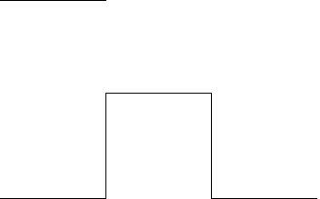

1. For the L-System with
| axiom | yF |
| production rules | + -> + |
| - -> - | |
| F -> F | |
| x -> yF+xF+y | |
| y -> xF-yF-x |
write the first and second steps of applying these rules. Taking the turning angle to be 60 degrees, sketch the second step. Use the L-System software to draw the fifth step. From the picture, guess the limiting shape. Answer.
2. Here are geometric realizations of the axiom and first steps of an L-System.
|  |
Find an axiom and production rule that give rise to these figures. Sketch the next (second) step. Use the L-System software to draw the fourth step. Assume the turning angles are 90 degrees. Answer.
3. Consider this L-System
| axiom | Fx |
| production rules | + -> + |
| - -> - | |
| F -> F | |
| x -> x+yF+ | |
| y -> -Fx-y |
Draw the first four steps. Find a relation between each step and the next. Using twist-ties, construct models of these steps. Determine a physical process for generating a model of any step desired. Note that no rescaling goes on here. All steps have straight segments of the same length, and successive steps get larger and larger. Answer
When the steps are rescaled, the limiting shape is called the Dragon curve. A very interesting alternative to L-Systems is the paperfolding approach described by Vicki Fegers and Mary Beth Johnson in their chapter "Fractals - energizing the mathematics classroom" of Fractals, Graphics, and Mathematics Education.
Return to L-Systems: Patterns with Grammar